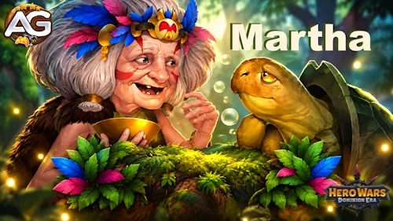
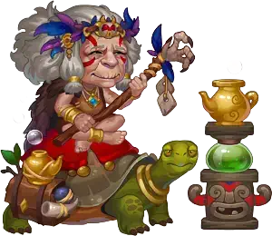
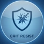
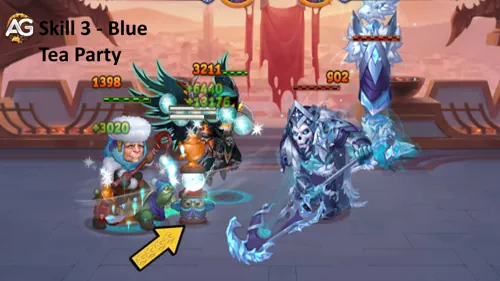
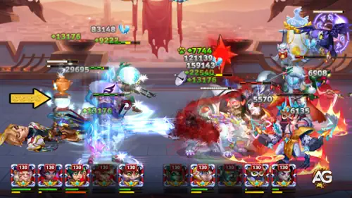
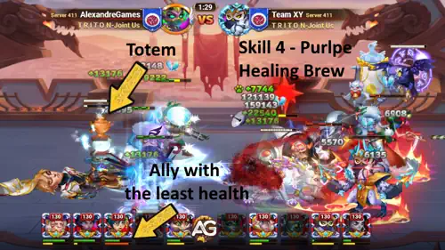
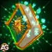
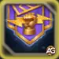
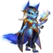
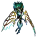

Martha-Guide: Fähigkeiten und Aufstieg für Hero Wars: Dominion Era
- Von: Alexandre Domingos. .
Wenn dein Team kurz vor dem Zusammenbruch steht, kann Martha eine Tasse Tee in eine zweite Chance verwandeln. In Hero Wars: Dominion Era verbindet sie Gruppenheilung, eigene Überlebensfähigkeit und einen Geschwindigkeitsschub für das Team, der sowohl physischen als auch magischen Schadensverursachern hilft. Ich schätze sie besonders, wenn ein Team Zeit braucht, um sich zu erholen und weiterzukämpfen.
Die eigentliche Frage ist, wo du zuerst investieren solltest. Mein Ansatz besteht darin, zunächst ihre Heilungsgrundlage aufzubauen und anschließend die Werte zu verbessern, die sie am Leben halten. Hier erkläre ich ihre Fähigkeiten, beide Aufstiegsverbesserungen, Skins, Glyphen, Artefakte, Begleiter und Teamoptionen samt den Formeln hinter diesen Prioritäten, damit du den Ausbau an deine eigenen Kämpfe anpassen kannst.

📋 Martha-Inhaltsverzeichnis
- Wer ist Martha?
- Marthas Gesamtbewertung
- Maximale Werte
- Vor- und Nachteile
- Fähigkeiten und Verbesserungspriorität
- Aufstieg II: Belebende Kräuter
- Aufstieg V: Schutz der Schildkröte
- Beste Skins und Verbesserungsreihenfolge
- Verbesserungspriorität der Glyphen
- Verbesserungspriorität der Artefakte
- Beste Schutzherrschaft
- So konterst du Martha
- Beste Kriegsflaggen
- Beste Teams
- Lohnt es sich, Martha auszubauen?
Wer ist Martha in Hero Wars: Dominion Era?
Martha ist eine auf Intelligenz basierende Heilerin, die in der hinteren Reihe kämpft. Ihre Geschichte beginnt mit einem bemerkenswerten Tee aus den Wäldern von Zarakkar, bewacht von der Urmutter, der uralten Ahnin aller Landschildkröten. Dieses Geschenk der Langlebigkeit prägt ihr gesamtes Fähigkeitenset: Sie heilt sich durch normale Angriffe selbst und unterstützt ihre Verbündeten mit einem Heiltotem.

- Hauptrolle: Heilerin
- Zusätzliche Rolle: Unterstützung
- Hauptattribut: Intelligenz
- Position: Hintere Reihe; Position auf dem Schlachtfeld Nr. 75
- Schutzherrschaft: Oliver, Axel, Robin
- Seelensteine: Seelentruhen, Seelenatrium
Ihre Heilung hängt von zwei verschiedenen Werten ab. Magischer Angriff verbessert die Teeparty, während Gesundheit das Geheimnis der Langlebigkeit und den Heilenden Trank verbessert. Deshalb räume ich Gesundheit bei ihren Skin-Prioritäten einen so hohen Stellenwert ein.
Marthas maximale Werte — Hero Wars: Dominion Era
| Wert | Wert | Wert | Wert |
|---|---|---|---|
| Intelligenz | 16.208 | Beweglichkeit | 2.122 |
| Stärke | 5.151 | Gesundheit | 922.177 |
| Physischer Angriff | 20.502 | Magischer Angriff | 121.512 |
| Rüstung | 34.962 | Magische Verteidigung | 43.049 |
| Genauigkeit | 16.208 | Kritische Resistenz |  16.208 |
| Stärke gesamt | 2.394.489 | ||
Normaler Angriff: 20.502 physischer Schaden (100 % Physischer Angriff), vor Schadensminderung, mit einer Abklingzeit von 8 Sekunden. Das Waffenartefakt gewährt +50.190 Rüstung.
Marthas Vor- und Nachteile — Hero Wars: Web und Facebook
✅ Vorteile
- Starke Gruppenheilung: Die Teeparty stellt die Gesundheit der Verbündeten wieder her, und der Heilende Trank gewährt dem Verbündeten mit der geringsten Gesundheit zusätzliche Heilung.
- Eine widerstandsfähige hintere Reihe: Ihr Gesundheitsvorrat und ihre Selbstheilung helfen ihr, dem Druck von Jhu, Kayla, Jorgen und Luther standzuhalten. Sie kann auch Druck von Cleaver überstehen, obwohl seine Positionsveränderung weiterhin ein Problem darstellt.
- Bei verschiedenen Schadensarten nützlich: Ihr Geschwindigkeitsschub für das Team unterstützt sowohl physische als auch magische Schadenskompositionen.
- Eine Option für Verteidigung und Bosskämpfe: Ihre anhaltende Heilung macht sie zu einer nützlichen Wahl für Verteidigungsteams und gegen Osh in Asgard.
❌ Nachteile
- Beeinträchtigung der Heilung: Celeste, Jet, Yasmine und der Begleiter Biscuit können die Wirksamkeit ihrer Heilung verringern.
- Ein verwundbares Totem: Flächenschaden kann es zerstören und dadurch sowohl die Gruppenheilung als auch den Heilenden Trank unterbrechen. Aufstieg II verbessert seine Widerstandsfähigkeit auf Rang 3, macht es aber nicht unzerstörbar.
- Die Position ist wichtig: Cleaver kann sie nach vorne ziehen und die hintere Reihe freilegen. Eine kürzere Flugstrecke des Projektils verringert außerdem die Heilung durch das Geheimnis der Langlebigkeit.
Verbesserungspriorität von Marthas Fähigkeiten — Hero Wars: Dominion Era
Erfahre, wie Marthas Heilungs- und Geschwindigkeitsfähigkeiten funktionieren, welche Verbesserungen ich zuerst priorisiere und wie der Aufstieg ihre Unterstützung im Laufe deiner Kontofortschritte verbessert.
Meine Verbesserungsreihenfolge für Anfänger: Teeparty → Heilender Trank → Eid der Urmutter → Geheimnis der Langlebigkeit, sobald die jeweilige Fähigkeit verfügbar wird. Wenn Martha selbst zuerst stirbt, ziehe das Geheimnis der Langlebigkeit vor. Die Karten unten bleiben in ihrer Reihenfolge im Spiel.
Die Formel-Beispiele verwenden Fähigkeitsstufe 130, 922.177 Gesundheit und 121.512 Magischer Angriff. Die Prioritäten der Grundfähigkeiten gelten unabhängig davon; die späteren Aufstiegsfreischaltungen sind zusätzliche Investitionen.
1. Eid der Urmutter
Beschreibung im Spiel: Erhöht die Geschwindigkeit aller Verbündeten für 6 s.

Erklärung der Fähigkeit: Dies ist ein Geschwindigkeitsbonus für das Team und kein schadensverursachender Angriff. Auf Stufe 130 erhöht er die Geschwindigkeit der Verbündeten für 6 Sekunden auf bis zu 250 %. Ich schätze ihn, weil er dem gesamten Team hilft, schneller zu handeln, unabhängig davon, ob dein Hauptschadensverursacher physischen oder magischen Schaden verursacht. Dieser Geschwindigkeitswert sollte nicht als garantierte Erhöhung des gesamten Teamschadens um 250 % verstanden werden.
Formel: Erhöht die Geschwindigkeit der Verbündeten auf bis zu 250 % (1 * Stufe + 120)
Informationen zur Fähigkeitsanimation
- Dauer: 6 Sekunden
Entwicklungspriorität: Mittelhoch — 3. Priorität — Ich baue zuerst die Heilfähigkeiten aus und verstärke danach den Geschwindigkeitsschub des Teams. Er wird besonders wertvoll, sobald das Team lange genug überleben kann, um diese schnelleren Aktionen zu nutzen.
2. Geheimnis der Langlebigkeit
Beschreibung im Spiel: Marthas normale Angriffe heilen sie, wenn ein Projektil einen Gegner trifft. Je weiter das Projektil fliegt, desto mehr Gesundheit stellt es wieder her.
Erklärung der Fähigkeit: Martha heilt sich selbst, wenn das Projektil ihres normalen Angriffs einen Gegner erreicht. Ein längerer Weg sorgt für mehr Heilung, mit diesen Werten bis zu 273.322 Gesundheit pro Projektil. Der Angriff selbst verursacht physischen Schaden; die passive Fähigkeit fügt Heilung für Martha hinzu. Das erklärt, warum ihre Position in der hinteren Reihe wichtig ist und warum das Heranziehen nach vorne ihre Erholung schwächen kann.
Formel: Ein Projektil kann bis zu 273.322 (24 % Gesundheit + 400 * Stufe) Gesundheit wiederherstellen
Entwicklungspriorität: Mittel — 4. Priorität — Dies hilft Martha direkt, statt das gesamte Team zu heilen. Verbessere die Fähigkeit früher, wenn Druck auf die hintere Reihe sie tötet; andernfalls baue zuerst ihre Teamheilung auf.
3. Teeparty
Beschreibung im Spiel: Beschwört vor dem Charakter ein Totem, das die Gesundheit der Verbündeten wiederherstellt. Gegner können das Totem nicht als Ziel auswählen, aber es kann Flächenschaden erleiden.

Erklärung der Fähigkeit: Das Totem ist die Grundlage von Marthas Gruppenheilung. Sein angegebener Heilwert beträgt 105.407 für jeden Verbündeten bei einer Dauer von 8 Sekunden. Dies ist ein Heileffekt und kein magischer Schaden, obwohl er mit Magischem Angriff skaliert. Gegner können das Totem nicht als Ziel auswählen, aber Flächenangriffe können es dennoch treffen und zerstören. Wenn das passiert, verliert dein Team die Heilung, auf die es sich verlassen hat.
Formel: Gesundheitsregeneration für jeden Verbündeten: 105.407 (60 % magischer Angriff + 250 * Stufe) für 8 s
Informationen zur Fähigkeitsanimation
- Abklingzeit: 15 Sekunden
- Dauer: 8 Sekunden
Entwicklungspriorität: Sehr hoch — 1. Priorität — Dies heilt das gesamte Team und ermöglicht den Heilenden Trank. Die Fähigkeit verdient auch vor der Verfügbarkeit des Aufstiegs die erste Priorität, weil das grundlegende Totem bereits zentral für ihre Aufgabe ist.
Aufstieg II: Belebende Kräuter
Beschreibung im Spiel — Rang 3: Solange das Totem aktiv ist, erhöht es die Geschwindigkeit aller Verbündeten um 20 % (20). Das Totem kann bis zu 3 (3) Treffer einstecken, bevor es zerstört wird.

Erklärung der Fähigkeit: Vor dem Aufstieg bietet die Teeparty Heilung. Belebende Kräuter fügt einen Geschwindigkeitsbonus für das Team hinzu, solange das Totem aktiv ist: 10 % auf Rang 0, 15 % auf Rang 1 und 20 % auf den Rängen 2 und 3. Rang 3 erlaubt dem Totem außerdem, bis zu 3 Treffer vor seiner Zerstörung einzustecken. Ich halte diesen letzten Schritt für einen wertvollen Schutz der Quelle ihrer beiden totembasierten Heilungen.
| Rang | Beschreibung im Spiel | Verbesserungskosten |
|---|---|---|
| 0 | Solange das Totem aktiv ist, erhöht es die Geschwindigkeit aller Verbündeten um 10 % (10). | Erstmalige Freischaltung der Aufstiegsfähigkeit |
| 1 | Solange das Totem aktiv ist, erhöht es die Geschwindigkeit aller Verbündeten um 15 % (15). | 200 Aufstiegsstaub + 1.450.000 Gold |
| 2 | Solange das Totem aktiv ist, erhöht es die Geschwindigkeit aller Verbündeten um 20 % (20). | 300 Aufstiegsstaub + 2.900.000 Gold |
| 3 | Solange das Totem aktiv ist, erhöht es die Geschwindigkeit aller Verbündeten um 20 % (20). Das Totem kann bis zu 3 (3) Treffer einstecken, bevor es zerstört wird. | 750 Aufstiegsstaub + 4.350.000 Gold |
Meine Aufstiegspriorität: Erreiche Aufstieg II, bevor du die deutlich spätere Investition in Aufstieg V planst. Der Geschwindigkeitsbonus und die Widerstandsfähigkeit auf Rang 3 verbessern eine Fähigkeit, auf die du bereits angewiesen bist. Die Ränge 1–3 kosten zusammen 1.250 Aufstiegsstaub und 8.700.000 Gold, zusätzlich zu den Kosten, um die Freischaltung zu erreichen.
4. Heilender Trank
Beschreibung im Spiel: Solange das Totem aktiv ist, erhält der Verbündete mit der geringsten Gesundheit nun zusätzliche Heilung.

Erklärung der Fähigkeit: Solange das Totem der Teeparty aktiv ist, erhält der Verbündete mit der geringsten Gesundheit zusätzlich 180.327 Gesundheit pro Sekunde für 8 Sekunden. Dies ist gezielte Heilung und kein Schaden. Sie hilft dem Verbündeten mit dem größten Bedarf, während die Teeparty alle unterstützt. Die zusätzliche Heilung setzt voraus, dass das Totem aktiv bleibt, und kann die Teeparty daher nicht ersetzen.
Formel: Gesundheitsregeneration pro Sekunde: 180.327 (15 % Gesundheit + 400 * Stufe - 10.000) für 8 s
Informationen zur Fähigkeitsanimation
- Dauer: 8 Sekunden
Entwicklungspriorität: Hoch — 2. Priorität — Nach der Freischaltung stärkt diese Fähigkeit ihre Möglichkeit, einen verletzten Verbündeten zu retten. Ich ordne sie nach der Teeparty ein, weil sie nur funktioniert, solange das Totem dieser Fähigkeit aktiv ist.
Aufstieg V: Schutz der Schildkröte
Beschreibung im Spiel — Rang 3: Solange Martha mehr als 50 % (50) Gesundheit hat, werden 20 % (20) des Schadens, den die beiden nächsten Verbündeten erhalten, auf sie übertragen.

Erklärung der Fähigkeit: Der Heilende Trank hilft bereits einem verletzten Verbündeten; der Schutz der Schildkröte fügt eine Schadensaufteilung hinzu. Solange Martha mehr als 50 % Gesundheit hat, übernimmt sie je nach Rang 10 %, 15 % oder 20 % des Schadens, den der nächste Verbündete erhält. Auf Rang 3 gilt die Übertragung von 20 % für die beiden nächsten Verbündeten. Der Schaden wird auf Martha übertragen, daher bleibt ihr eigenes Überleben wichtig. Bei 50 % Gesundheit oder weniger ist die angegebene Aktivierungsbedingung nicht mehr erfüllt.
| Rang | Beschreibung im Spiel | Verbesserungskosten |
|---|---|---|
| 0 | Solange Martha mehr als 50 % (50) Gesundheit hat, werden 10 % (10) des Schadens, den der nächste Verbündete erhält, auf sie übertragen. | Erstmalige Freischaltung der Aufstiegsfähigkeit |
| 1 | Solange Martha mehr als 50 % (50) Gesundheit hat, werden 15 % (15) des Schadens, den der nächste Verbündete erhält, auf sie übertragen. | 200 Aufstiegssplitter + 1.750.000 Gold |
| 2 | Solange Martha mehr als 50 % (50) Gesundheit hat, werden 20 % (20) des Schadens, den der nächste Verbündete erhält, auf sie übertragen. | 300 Aufstiegssplitter + 3.500.000 Gold |
| 3 | Solange Martha mehr als 50 % (50) Gesundheit hat, werden 20 % (20) des Schadens, den die beiden nächsten Verbündeten erhalten, auf sie übertragen. | 750 Aufstiegssplitter + 5.250.000 Gold |
Meine Aufstiegspriorität: Betrachte dies als spätere defensive Investition, nachdem ihre grundlegende Heilung und Überlebensfähigkeit gesichert sind. Es schützt nahe Verbündete, setzt Martha aber auch stärker unter Druck. Die Ränge 1–3 kosten zusammen 1.250 Aufstiegssplitter und 10.500.000 Gold, zusätzlich zu den Kosten, um die Freischaltung zu erreichen.
Bester Skin für Martha — Hero Wars: Dominion Era
Wähle Marthas Skins anhand der Heilung, die du am dringendsten brauchst: Gesundheit stärkt zwei Fähigkeiten, Rüstung hilft ihr beim Überleben und Magischer Angriff verbessert die Teeparty.
Meine Skin-Priorität für Martha: Sonnen- oder Himmlischer Skin → der andere Gesundheits-Skin → Winter-Skin → Standard-Skin → Maskenball-Skin. Sonnen- und Himmlischer Skin gewähren genau denselben Bonus und haben dieselben Aufwertungskosten, also beginne mit dem Skin, den du besitzt. Ziehe den Winter-Skin vor, wenn physischer Schaden Martha tötet; ziehe den Maskenball-Skin vor, wenn sie bereits problemlos überlebt und dein Hauptproblem die Gruppenheilung ist.
Alle Skin-Boni summieren sich unabhängig vom ausgerüsteten Aussehen. Du musst keinen Gesundheits-Skin tragen, um seinen verbesserten Gesundheitsbonus zu erhalten. Die Karten unten behalten ihre ursprüngliche Reihenfolge bei.
Standard-Skin
Wertezuwachs: Intelligenz +1.365
Jeder Intelligenzpunkt gewährt 3 Magischer Angriff und 1 Magische Verteidigung sowie 1 Physischer Angriff, weil Intelligenz Marthas Hauptattribut ist.
- Magischer Angriff durch Intelligenz: +4.095
- Magische Verteidigung durch Intelligenz: +1.365
- Physischer Angriff durch Intelligenz: +1.365
Der zusätzliche Magische Angriff fügt der Formel der Teeparty 2.457 hinzu: 60 % × 4.095. Physischer Angriff ist ein zweitrangiger Vorteil für eine Heldin, deren Hauptaufgabe das Heilen ist.
Entwicklungspriorität: Mittel — nach Gesundheit und Rüstung — Intelligenz bietet eine nützliche Mischung aus Heilung und magischer Verteidigung bei geringeren Gesamtkosten an Steinen. Ich ordne sie nach der defensiven Grundlage ein; ein kleineres Budget kann es rechtfertigen, diesen günstigeren Skin früher auszubauen.
Intelligenz-Skinsteine insgesamt für die maximale Stufe: 30.825.
Winter-Skin
Wertezuwachs: Rüstung +10.665
Dies ist die defensive Wahl gegen physischen Schaden. Der Vorteil besteht darin, Martha am Leben zu halten, damit ihre Heilung und Geschwindigkeitsunterstützung weiterwirken können.
Entwicklungspriorität: Hoch — nach beiden Gesundheits-Skins — Rüstung hilft Martha, physischem Druck standzuhalten, erhöht aber ihre Heilformeln nicht direkt. Ziehe diesen Skin dem zweiten Gesundheits-Skin vor, wenn physische Angreifer der Grund für ihren Tod sind.
Intelligenz-Skinsteine insgesamt für die maximale Stufe: 58.412.
Sonnen-Skin
Wertezuwachs: Gesundheit +106.645
Dieser Bonus fügt ungefähr 25.595 zur maximalen Selbstheilung des Geheimnisses der Langlebigkeit (24 % × 106.645) und 15.997 pro Sekunde zum Heilenden Trank (15 % × 106.645) hinzu, vor temporären Effekten. Er gibt Martha außerdem mehr Gesundheit, um Schaden aufzufangen, sobald der Schutz der Schildkröte freigeschaltet ist.
Entwicklungspriorität: Sehr hoch — gemeinsam mit dem Himmlischen Skin auf Platz 1 — Gesundheit verbessert gleichzeitig Marthas Überleben und zwei Heilfähigkeiten. Sie ist meine erste allgemeine Investition mit derselben Priorität wie der Himmlische Skin.
Intelligenz-Skinsteine insgesamt für die maximale Stufe: 55.410.
Maskenball-Skin
Wertezuwachs: Magischer Angriff +10.650
Die +10.650 Magischer Angriff fügen 6.390 zur Heilformel der Teeparty hinzu: 60 % × 10.650. Das ist eine größere direkte Verbesserung der Teeparty als beim Standard-Skin, obwohl sie keine zusätzliche Gesundheit oder Rüstung bietet.
Entwicklungspriorität: Mittel — situationsabhängige Heilungsverbesserung — Dies verbessert die Gruppenheilung direkt, erhöht aber nicht die gesundheitsbasierte Heilung des Geheimnisses der Langlebigkeit oder des Heilenden Tranks. Ziehe diesen Skin defensiven Skins vor, wenn Martha sicher ist und die Teeparty mehr Heilung liefern muss.
Intelligenz-Skinsteine insgesamt für die maximale Stufe: 55.410.
Himmlischer Skin
Wertezuwachs: Gesundheit +106.645
Dieser Bonus fügt ungefähr 25.595 zur maximalen Selbstheilung des Geheimnisses der Langlebigkeit (24 % × 106.645) und 15.997 pro Sekunde zum Heilenden Trank (15 % × 106.645) hinzu, vor temporären Effekten. Er gibt Martha außerdem mehr Gesundheit, um Schaden aufzufangen, sobald der Schutz der Schildkröte freigeschaltet ist.
Entwicklungspriorität: Sehr hoch — gemeinsam mit dem Sonnen-Skin auf Platz 1 — Er bietet genau dieselbe Gesundheit und dieselben Aufwertungskosten wie der Sonnen-Skin. Wähle zuerst den Skin, der dir zur Verfügung steht, und baue anschließend den anderen aus, um denselben Bonus ein weiteres Mal zu erhalten.
Intelligenz-Skinsteine insgesamt für die maximale Stufe: 55.410.
Entwicklungspriorität von Marthas Glyphen
Baue Marthas Glyphen mit zuverlässiger Heilung und Überleben als Grundlage aus und passe anschließend die defensiven Verbesserungen an die Gegner an, die dein Team am stärksten unter Druck setzen.
Meine allgemeine Glyphenreihenfolge: Gesundheit → Rüstung → Intelligenz → Magischer Angriff → Magische Verteidigung. Ziehe Magische Verteidigung bei magischem Druck der Rüstung vor oder Magischen Angriff den defensiven Verbesserungen, wenn Martha bereits problemlos überlebt. Die Karten behalten ihre Reihenfolge im Spiel bei.
1. Glyphe für Magischen Angriff
Wertezuwachs: Magischer Angriff +6.500
Die +6.500 Magischer Angriff fügen 3.900 zur Heilformel der Teeparty hinzu (60 % × 6.500). Das verbessert die Heilung des gesamten Teams, aber nicht die beiden gesundheitsbasierten Heilungen.
Entwicklungspriorität: Mittelhoch — 4. Priorität — Ich priorisiere zunächst, Martha am Leben zu halten. Ziehe diese Glyphe vor, wenn sie sicher ist und das gesamte Team stärkere Totemheilung benötigt.
2. Gesundheitsglyphe
Wertezuwachs: Gesundheit +62.200
Die +62.200 Gesundheit fügen 14.928 zur maximalen Heilung des Geheimnisses der Langlebigkeit und 9.330 pro Sekunde zum Heilenden Trank hinzu. Außerdem bieten sie einen größeren Vorrat für Schaden, der durch den Schutz der Schildkröte übertragen wird.
Entwicklungspriorität: Sehr hoch — 1. Priorität — Diese einzelne Verbesserung stärkt das Überleben und zwei Heilfähigkeiten und ist damit mein stärkster allgemeiner Ausgangspunkt.
3. Glyphe für Magische Verteidigung
Wertezuwachs: Magische Verteidigung +6.500
Magische Verteidigung verringert eingehenden magischen Schaden. Sie erhöht Marthas Heilung nicht direkt.
Entwicklungspriorität: Mittel — standardmäßig 5. Priorität — Hebe sie für später auf, wenn physischer Schaden die Hauptbedrohung ist, ziehe sie aber gegen Teams mit magischem Schaden der Rüstung vor.
4. Rüstungsglyphe
Wertezuwachs: Rüstung +6.500
Rüstung hilft Martha, physische Angriffe auf die hintere Reihe zu überleben. Anders als Gesundheit erhöht sie keine Heilformel direkt.
Entwicklungspriorität: Hoch — 2. Priorität — Eine Heilerin, die stirbt, kann das Team nicht am Leben halten. Ich baue diese Glyphe früh aus, wenn physischer Druck Martha bedroht, bevor sie sich erholen kann.
5. Intelligenzglyphe
Wertezuwachs: Intelligenz +1.135
+3.405 Magischer Angriff, +1.135 Magische Verteidigung und +1.135 Physischer Angriff entstehen durch diesen Hauptattributbonus. Der Magische Angriff fügt 2.043 zur Heilformel der Teeparty hinzu.
Entwicklungspriorität: Mittelhoch — 3. Priorität — Ich schätze die Mischung aus Heilung und magischer Verteidigung nach der Grundlage aus Gesundheit und Rüstung. Für reine Heilungsleistung ist dagegen die Glyphe für Magischen Angriff günstiger.
Entwicklungspriorität von Marthas Artefakten — Hero Wars: Dominion Era
Wähle Marthas Artefakte nach ihrer Wirkung auf das Überleben: Das Buch stärkt die Heilung, die Teekanne liefert Rüstung und der Ring verbessert ihr Hauptattribut.
Meine Artefaktreihenfolge: Foliant des arkanen Wissens → Teekanne von Zarakkar → Ring der Intelligenz. Ziehe die Waffe vor, wenn das Team dringend Schutz vor physischem Schaden benötigt. Waffe, Buch und Ring verwenden unterschiedliche Aufwertungsmaterialien, daher ist diese Reihenfolge besonders nützlich bei der Entscheidung, wofür gemeinsame Ressourcen eingesetzt werden sollen.
Waffe: Teekanne von Zarakkar
Wertezuwachs: Rüstung +50.190
Wenn der Eid der Urmutter das Waffenartefakt aktiviert, erhält das Team dessen Rüstungsbonus für 9 Sekunden. Der angezeigte maximale Bonus beträgt +50.190 Rüstung. Dies ist ein temporärer Teambonus und keine dauerhaft zu Martha hinzugefügte Rüstung.
Entwicklungspriorität: Hoch — 2. Priorität — Dies schützt das gesamte Team vor physischem Schaden. In solchen Begegnungen kann es meine erste Priorität werden, und Robins zusätzliche Energie hilft Martha, die auslösende ultimative Fähigkeit zu erreichen.

Buch: Foliant des arkanen Wissens
Wertezuwachs: Gesundheit +83.649
Wertezuwachs: Magischer Angriff +16.731
Das Buch fügt ungefähr 20.076 zur maximalen Heilung des Geheimnisses der Langlebigkeit, 12.547 pro Sekunde zum Heilenden Trank und 10.039 zur Formel der Teeparty hinzu. Diese Erhöhungen ergeben sich aus 24 % und 15 % seiner Gesundheit sowie 60 % seines Magischen Angriffs.
Entwicklungspriorität: Sehr hoch — 1. Priorität — Es stärkt alle drei Heilfähigkeiten und macht Martha gleichzeitig schwerer zu töten. Dieser breite Nutzen ist der Grund, weshalb ich bei einem allgemeinen Ausbau hier beginne.
Ring: Ring der Intelligenz
Wertezuwachs: Intelligenz +6.249
Die Intelligenz gewährt +18.747 Magischer Angriff, +6.249 Magische Verteidigung und +6.249 Physischer Angriff. Sie fügt ungefähr 11.248 zur Formel der Teeparty hinzu (60 % × 18.747).
Entwicklungspriorität: Mittelhoch — 3. Priorität — Dies bietet von den beiden permanenten Artefakten die größte direkte Verbesserung der Teeparty, aber das Buch verbessert zusätzlich die gesundheitsbasierte Heilung und die Waffe schützt Verbündete. Werte den Ring früher auf, wenn stärkere Gruppenheilung dein wichtigster Bedarf ist.
Beste Schutzherrschaft für Martha
Wähle Marthas Schutzbegleiter nach dem Problem, das du lösen musst: Robin unterstützt den Energiegewinn, Oliver erhöht die Widerstandsfähigkeit und Axel hilft ihr, mächtige Treffer zu überstehen.
Meine allgemeine Rangfolge: Robin → Oliver → Axel. Dies sind alle drei kompatiblen Schutzbegleiter. Diese Reihenfolge setzt voraus, dass Martha lange genug überlebt, um das Team zu unterstützen; gegen tödliche Schadensspitzen kann Axel die beste Wahl werden.
1. Platz — Robin
Günstiger Wind gewährt Martha ungefähr 75,01 zusätzliche Energie alle 5 Sekunden bei der angegebenen maximalen Schutzherrschaftsstärke. Robin liefert außerdem +99.576 Gesundheit und +9.958 Magische Verteidigung. Ich setze ihn auf Platz eins, weil Gesundheit ihre beiden gesundheitsbasierten Heilungen unterstützt, während Energie ihr hilft, den Eid der Urmutter und dessen Rüstungsbonus durch das Artefakt häufiger einzusetzen. Ihre ultimative Fähigkeit gewährt Geschwindigkeit; sie beschwört nicht direkt das Totem der Teeparty.
2. Platz — Oliver
Oliver gewährt Gesundheit und Rüstung, eine nützliche Kombination, wenn Martha physischen Druck überleben muss. Ewige Blüte bietet Heilung durch Schutzherrschaft mit einem angegebenen Maximalwert von 11.064 alle 0,5 Sekunden, solange der Effekt aktiv ist. Ich bevorzuge ihn, wenn Marthas eigene Widerstandsfähigkeit das Problem ist, besonders wenn der Schutz der Schildkröte zusätzlichen übertragenen Schaden verursacht. Referenz zu Olivers Fähigkeiten.
3. Platz — Axel
Axel gewährt Magischer Angriff und Rüstung. Seine Schutzherrschaft Defensive Blase begrenzt den Schaden eines einzelnen Angriffs auf ungefähr 45 % der maximalen Gesundheit seines Besitzers bei maximaler Schutzherrschaftsstärke. Wähle ihn früher, wenn große Einzeltreffer Martha töten, bevor sie sich erholen kann. Magischer Angriff verbessert zudem die Teeparty. Dieser Schutz ist nicht der Schild zur Schadensaufteilung im Team aus Axels aktiver Fähigkeit. Referenz zu Axels Fähigkeiten.
Schutzherrschaft und Hauptbegleiter sind getrennte Entscheidungen. Robin kann Martha beschützen, während Axel als Hauptbegleiter des Teams ausgewählt ist. Nur der ausgewählte Hauptbegleiter stellt seine aktiven Kampffähigkeiten bereit; die Zuweisung eines Schutzbegleiters gibt Martha diese aktiven Fähigkeiten nicht.
So konterst du Martha in Hero Wars: Dominion Era
Der wirksamste Ansatz besteht darin, die Heilung zu unterbrechen, die dein Gegner braucht: empfangene Heilung verringern, das Totem zerstören oder Marthas Position stören.
Die folgenden Optionen stehen in alphabetischer Reihenfolge. Ihr Wert hängt davon ab, welche Verbündeten ihre Fähigkeiten tatsächlich erreichen; ein einzelner Konter garantiert keinen Sieg.
Eisiger Sturm verhindert für 5 Sekunden, dass betroffene Gegner Heilung von anderen Charakteren erhalten, wodurch Marthas Heilung ihrer Teammitglieder unterbrochen wird. Selbstheilung ist eine Ausnahme. Unabhängig davon bewirkt Biscuits Schutzherrschaft, dass die Angriffe seines Besitzers die vom Ziel empfangene Heilung für 5 Sekunden verringern. Dies ist nützlich gegen ein Team, das sich zwischen Angriffen auf Martha zur Erholung verlässt. Referenz zu Biscuits Fähigkeiten.
Verfluchte Flamme blockiert Heilung bei betroffenen Gegnern, und Limbo wandelt einen Teil dieser blockierten Heilung in magischen Schaden um. Statt zu versuchen, jede Heilung mit mehr Schaden zu übertreffen, schafft Celeste ein Zeitfenster, in dem Martha den betroffenen Verbündeten nicht normal heilen kann. Position und Flammenabdeckung sind wichtig. Referenz zu Celestes Fähigkeiten.
Rostiger Haken zieht einen entfernten Gegner zu Cleaver. Wenn Martha das Ziel ist, verliert sie ihre geschützte Position in der hinteren Reihe und ist Bedrohungen in der Nähe ausgesetzt. Die kürzere Flugstrecke ihrer Angriffe verringert zudem die beim Geheimnis der Langlebigkeit beschriebene Selbstheilung. Ihre hohe Gesundheit verhindert keine Positionsveränderung. Referenz zu Cleavers Fähigkeiten.
Trank der Erschöpfung hindert betroffene Gegner in der Nähe für 8 Sekunden daran, Gesundheit zu regenerieren. Jet kann somit den Verbündeten, die er trifft, Marthas Heilung verwehren, ohne Martha selbst erreichen zu müssen. Der Effekt ist auf die betroffenen Ziele begrenzt, statt automatisch das gesamte Team auszuschalten. Referenz zu Jets Fähigkeiten.

Unbekanntes Toxin blockiert einen Teil jeder Heilung, die von Yasmines Gift betroffene Gegner erhalten. Dadurch wird es für Martha schwieriger, einen vergifteten Verbündeten zu retten. Es handelt sich um eine teilweise Heilungsunterdrückung, nicht um ein allgemeines Heilungsverbot, und Yasmine muss zuerst ihr Gift anwenden. Referenz zu Yasmines Fähigkeiten.
Behalte auch das Totem im Auge. Flächenangriffe können es zerstören, obwohl Gegner es nicht direkt anvisieren können. Mit Belebenden Kräutern auf Rang 3 kann es bis zu drei Treffer einstecken; ein einzelner Flächentreffer sollte daher nicht automatisch als ausreichend angesehen werden, um ein vollständig verbessertes Totem zu beseitigen. Der Verlust des Totems unterbricht sowohl die Teeparty als auch den Heilenden Trank.
Marthas beste Kriegsflaggen — Hero Wars: Dominion Era
Wähle eine Kriegsflagge, die das Problem des Teams löst: Erholung stärkt die Heilung, Bereitschaft hilft dem hintersten Helden und Bastion schützt vor Angriffen.
Kriegsflagge der Erholung
Meine erste Wahl für anhaltende Heilung.
Effekt: Erhöht sämtliche Heilung um 10 %.
Vorteil für Martha und das Team: Dies unterstützt Marthas Heilrolle direkt. Ich beginne hier, wenn das Team die Anfangsphase überlebt und während des gesamten Kampfes stärkere Erholung benötigt. Ein Heilungsbonus entfernt keinen gegnerischen Heilungsblockade-Effekt.

Kriegsflagge der Bereitschaft
Für häufigere ultimative Fähigkeiten in der hinteren Reihe.
Effekt: Gewährt 100 Energie dem hintersten Helden zu Beginn und alle 20 Sekunden. Jedes rote Muster fügt 20 Energie hinzu.
Vorteil für Martha und das Team: Martha ist eine Heldin der hinteren Reihe, erhält die Energie aber nur, wenn sie in dieser Aufstellung tatsächlich die hinterste Heldin ist. In diesem Fall hilft es ihr, den Eid der Urmutter und den Rüstungsbonus des Artefakts zu aktivieren. Steht ein anderer Held hinter ihr, erhält stattdessen dieser den Vorteil.
Kriegsflagge der Bastion
Um frühen physischen Druck zu überleben.
Effekt: Fügt zu Beginn Rüstung in Höhe von 30 % der Rüstung des vordersten Helden hinzu; dieser Wert sinkt auf 5 % innerhalb von 20 Sekunden. Jedes rote Muster verlängert den Effekt um 3 Sekunden.
Vorteil für Martha und das Team: Wähle sie, wenn physischer Schaden das Team überwältigt, bevor Martha den Kampf stabilisieren kann. Ihre Stärke hängt von der Rüstung des vordersten Helden ab, daher ist sie eine Entscheidung beim Teamaufbau und kein Bonus, der auf Marthas eigener Rüstung basiert.
Beste Teams für Martha — Hero Wars: Dominion Era
Diese drei Aufstellungen zeigen, wie ich Martha mit Kontrolle, physischen Angreifern und magischem Schaden einsetzen würde. Beginne mit dem Team, das zu deinen bereits ausgebauten Helden passt.
Die folgenden Schutzherrschaftszuweisungen entsprechen den drei empfohlenen Aufstellungen. Axel als Hauptbegleiter und Erholung als Kriegsflagge sind meine vorgeschlagenen Ausgangsentscheidungen für jedes Team. Axels aktiver Schild verteilt physischen und magischen Schaden entsprechend der verbleibenden Gesundheit auf die Verbündeten, wodurch Marthas Gruppenheilung mehr Schaden ausgleichen kann. Axels aktive Fähigkeiten.
Lies die Heldenspalten von der hinteren Reihe links zur vorderen Reihe rechts. Der Begleiter direkt über jedem Helden ist dessen Schutzbegleiter; die erste Spalte nennt separat den Hauptbegleiter und die Kriegsflagge.
Team 1: Kontrolle und magischer Druck
Somnas Schlaf und Angriffsverringerung verschaffen Luft, während Fluffy und Cascade Druck ausüben. Cascade verringert während seiner ultimativen Fähigkeit außerdem die gegnerische Heilung. Electra hält die Front, und Martha sorgt dahinter für die Erholung des Teams. Ich mag Martha hier, weil sowohl Heilung als auch Geschwindigkeit eine Aufstellung unterstützen, deren Frontlinie standhalten muss.
| Hauptbegleiter / Kriegsflagge | Hintere Reihe | Held 4 | Held 3 | Held 2 | Vordere Reihe |
|---|---|---|---|---|---|
| Axel | Robin | Fenris | Merlin | Khorus | Axel |
| Erholung | Martha |  Somna |
Fluffy | Cascade |  Electra |
Was ich im Kampf prüfen würde: Achte darauf, ob Electra zwischen ihren defensiven Fähigkeiten überlebt und ob Marthas Totem aktiv bleibt. Somnas Schlaf kann nach genügend Schaden vorzeitig enden, daher ist er kein garantiert ununterbrochenes Kontrollfenster.
Team 2: Physischer Schaden und Jägermarken
Eva und Adam interagieren mit Jägermarken, während Astrid und Lucas eine weitere Druckquelle und eine beschworene Präsenz an der Front hinzufügen. Julius unterstützt die Front, und Martha liefert anhaltende Heilung sowie einen Geschwindigkeitsbonus, der den Angreifern hilft, weiter zu handeln. Dies ist meine Option für physischen Schaden unter den drei Aufstellungen.
| Hauptbegleiter / Kriegsflagge | Hintere Reihe | Held 4 | Held 3 | Held 2 | Vordere Reihe |
|---|---|---|---|---|---|
| Axel | Robin | Vex | Fenris | Cain | Axel |
| Erholung | Martha | Astrid und Lucas | Adam | Julius |
Was ich im Kampf prüfen würde: Martha entfernt keine gegnerischen Heilungsblockaden. Wenn das Team in der Anfangsphase fällt, verbessere die Verteidigung der Frontlinie oder erwäge Bastion, bevor du lediglich mehr Heilung hinzufügst.
Team 3: Lars, Krista und anhaltender magischer Schaden
Lars und Krista bilden den Kern des magischen Schadens, während Jorgen Unterstützung liefert und Electra die Front hält. Marthas Aufgabe besteht darin, diesen Kern über wiederholte Schlagabtausche hinweg am Leben zu halten und das Team zu beschleunigen, sobald der Eid der Urmutter verfügbar ist. Die Aufstellung gibt ihr eine klare Aufgabe: die Verbündeten am Leben zu halten, die ihren Schaden liefern.
| Hauptbegleiter / Kriegsflagge | Hintere Reihe | Held 4 | Held 3 | Held 2 | Vordere Reihe |
|---|---|---|---|---|---|
| Axel | Robin | Mara | Oliver | Merlin | Axel |
| Erholung | Martha | Lars | Jorgen | Krista | Electra |
Was ich im Kampf prüfen würde: Achte auf gegnerische Heilungsunterdrückung und Flächenschaden rund um Marthas Totem. Aufstieg II verbessert die Widerstandsfähigkeit des Totems, aber die Komposition muss weiterhin überleben können, wenn die Heilung unterbrochen wird.
Lohnt es sich, Martha auszubauen?
Ich empfehle Martha, wenn dein Team anhaltende Heilung und einen Geschwindigkeitsschub benötigt, der seine Schadensverursacher unterstützt. Ihr bester Investitionsweg beginnt mit einer einfachen Frage: Stirbt sie, oder schafft es das Team nicht, sich zu erholen?
Wenn Martha stirbt, priorisiere Gesundheit und die relevante Verteidigung und überdenke ihren Schutzbegleiter. Wenn sie überlebt, aber Verbündete weiterhin fallen, verbessere die Teeparty, den Heilenden Trank und die Werte hinter diesen Formeln. Baue zuerst das grundlegende Fähigkeitenset aus und nutze anschließend Belebende Kräuter zur Verbesserung des Totems und den Schutz der Schildkröte zum Schutz naher Verbündeter.
Für einen allgemeinen Ausbau beginne ich mit gesundheitsorientierten Verbesserungen, dem Folianten des arkanen Wissens, Robins Schutzherrschaft und der Kriegsflagge der Erholung. Passe diese Entscheidungen an den Gegner an. Eine widerstandsfähige Martha mit einem geschützten Totem kann ein Team im Kampf halten; ein höherer Heilwert allein löst weder Positionsveränderungen noch ein zerstörtes Totem oder Heilungsunterdrückung.